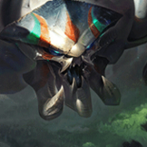

核心裝備
 熾灼之冠
熾灼之冠生命與護甲兼顧，近身後的持續灼燒適合史加納長時間黏住前排。
 無盡絕望
無盡絕望多人近戰時反覆回復，配合 90% 承傷修正能顯著提高續戰。
 雅瑪蘭守護像
雅瑪蘭守護像進入五人團戰後快速疊雙抗，把模式承傷優勢放大。
 荊棘之甲
荊棘之甲對射手、治療與吸血陣同時提供護甲和重創。
 自然之力
自然之力補高魔抗與移速，讓後期能更穩定穿過法術火力接近目標。

Skarner · 前排強開／壓制隔離型坦克
以 1 技持續撿石／強化普攻打前排，2 技在進場前先開盾。3 技不要只當位移，要找牆角或把目標推向己方。大絕最重要的是抓到高價值輸出後往己方拖，不必貪多人。
本站評級理由：7.2a 不只強化 1 技最大生命傷害、2 技護盾與 3 技冷卻，還把史加納標準 ARAM 直接調到 110% 傷害／90% 承傷；在狹窄單線中，多段控制與大絕壓制很容易把一人拖離隊伍，因此 S 級非常穩。
Riot 7.2a：Skarner 在 AAA ARAM 的傷害 100%→110%、承傷 100%→90%，官方明確註記這兩項也套用標準 ARAM。
生命與護甲兼顧，近身後的持續灼燒適合史加納長時間黏住前排。
多人近戰時反覆回復，配合 90% 承傷修正能顯著提高續戰。
進入五人團戰後快速疊雙抗，把模式承傷優勢放大。
對射手、治療與吸血陣同時提供護甲和重創。
補高魔抗與移速，讓後期能更穩定穿過法術火力接近目標。

前期正面承受物理與普攻時最穩，和 90% 模式承傷疊加後更難處理。

升級三級鞋後進一步提高物理承傷；法傷／控制偏多時可改水星線。

持續貼前排時能反覆觸發，補傷害、治療與生命。

3 技與大絕控制後取得護盾，提高強開容錯。

被遠程消耗時維持血線，確保有足夠生命發動下一次強開。

單線小兵死亡密集，能穩定增加最大生命並強化 2 技護盾。
更多技能加速讓 1、2、3 技在長團戰更快輪轉。

可用來突然調整大絕／3 技角度，也能在強開失敗時撤回。

提高持續貼人與拖拽目標時的移動能力，補足沒有雪球資料的情況。
1 技 > 2 技 > 3 技
ARAM 開局三個基礎技能各點 1 級，之後主升 1 技、次升 2 技；大絕能點就點。
先用 1 技強化普攻處理靠前目標，2 技在吃第一輪技能前就開。3 技如果沒有好牆角，不必為了硬抓而衝進敵方五人。
兩件坦裝後可以主動站前。3 技把目標推回己方後再接大絕通常比直接正面開大更穩；大絕能抓到核心一人就值得。
110% 傷害與 90% 承傷讓你可以更積極，但仍要等隊友能跟上。抓到後排後往己方拖，優先創造人數差，而不是把自己和目標一起送到敵方深處。
可替換自然之力，提高貼身灼燒與清兵。
 蘭頓之兆
蘭頓之兆需要更高抗暴擊能力時替換自然之力或一件功能裝。
 好戰者鎧甲
好戰者鎧甲最大生命足夠後可用來強化脫戰續航。
看遊戲卡片下方分類 → 點相同分類 → 看左側 S+／S／A。
三技能與大絕都能改變敵人位置，控制類增幅能直接放大抓人與留人價值。
坦度、反位移與貼身控制和史加納正面拖拽的玩法完全一致。
生命、雙防與體型能讓他更穩地把目標拖回己方。
二技能可穩定提供護盾，護盾免控與近身護盾傷害都非常實用。
一技能強化普攻，貼身纏鬥時可以穩定利用部分命中特效。
技能冷卻縮短能提高推人、護盾與大絕前後的控制密度。
7.2b ARAM S 第五批：史加納套用 7.2a 官方明確延伸至標準 ARAM 的 110% 傷害／90% 承傷。
ARAM 使用獨立於召喚峽谷的資料集；本站會把官方模式平衡、單線 5v5 特性與出裝／符文適配分開判斷，而不是直接複製峽谷配置。